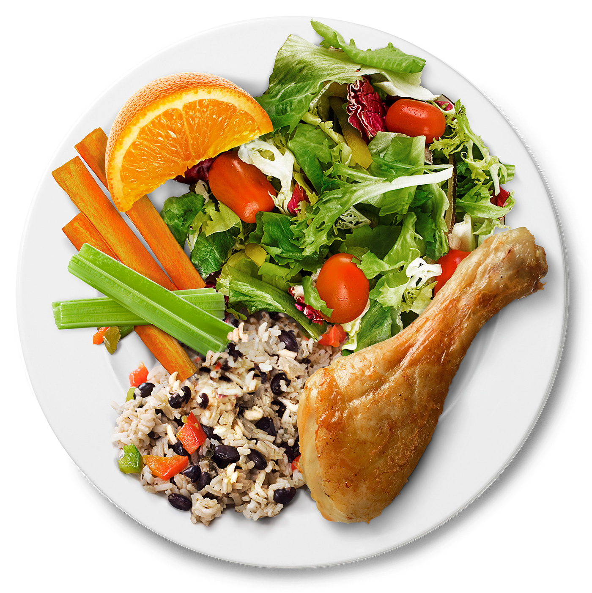

Fried Chicken & Salad
Ingredients
- 2 boneless chicken breasts
- 1 cup buttermilk
- 1 cup flour
- 1 tsp paprika
- 1 tsp garlic powder
- Salt and pepper to taste
- Vegetable oil for frying
- 2 cups mixed salad greens
- 1 tomato, diced
- ½ cucumber, sliced
- Salad dressing of choice
0:00
3:00
Place chicken breasts in a bowl with buttermilk and let marinate for at least 20 minutes.
In another bowl, mix flour, paprika, garlic powder, salt, and pepper.
Heat oil in a pan over medium-high heat.
Dredge chicken in flour mixture and fry until golden brown and cooked through.
While chicken cooks, assemble salad with greens, tomato, and cucumber.
Slice chicken and place on top of salad. Drizzle with dressing and serve.